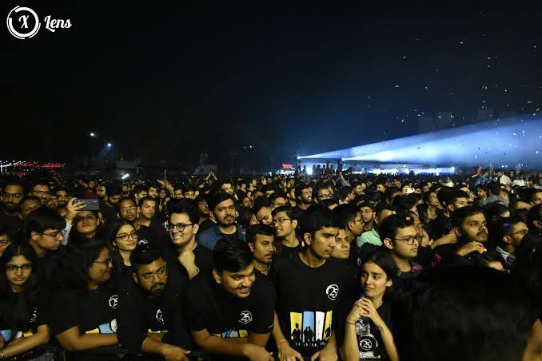
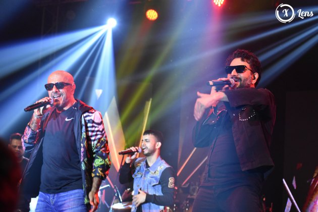
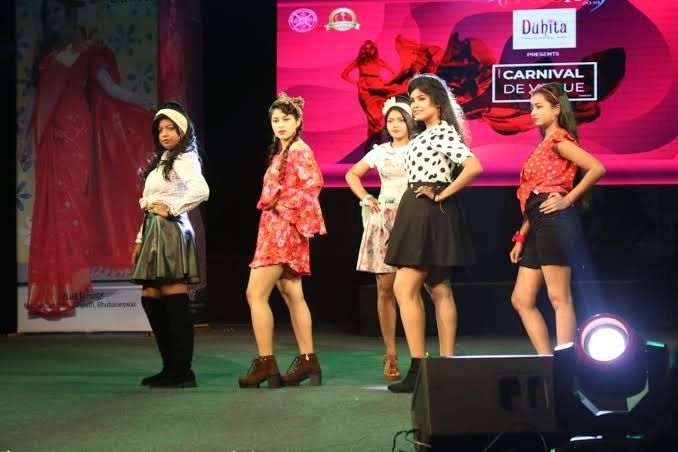
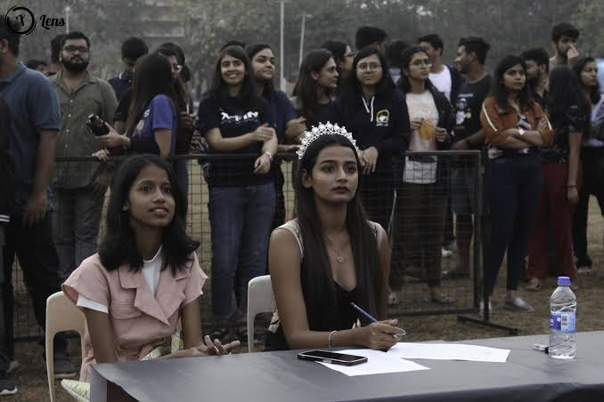

Management and cultural fest · XIM University, Bhubaneswar
Compete. Perform. Celebrate.
Three days where national-level business challenges, a full stage and a live pro show come together, with students from colleges across the country.

Latest edition
Xpressions '25
- Dates
- 28 February to 1 March 2026
- Venue
- XIMB Old Campus, Jayadev Vihar, Bhubaneswar
- Pro show
- Amaal Mallik, 1 March, XIM Ground
- Also on
- Aashish Solanki (comedy), The Xenial Secrets (EDM night), X-Athon 10 km run
Three ways to take part
Xpressions mixes business challenges with a full cultural stage, so there is a place for most students.
Business and management
Case studies, trading and business simulations, pitching, a Model UN and a CSR action-plan competition, set by XIM's own committees.
Stage and cultural
Western and Indian dance, singing, a band battle, street play, mono-act, fashion, painting, photography and short film.
Social and informal
The X-Athon 10 km run for a cause, X-Enable for specially-abled children, treasure hunts and a human foosball tournament.
Why come
Competitors
Take on real case studies and simulations run by a B-school, and add something strong to your CV.
Performers
Get a proper stage and a big audience for dance, music, drama, fashion, art and film.
Visitors
Catch pro shows, stand-up and an EDM night on a busy campus.
Sponsors
Reach management students and the Bhubaneswar audience. More than 25 partners joined Xpressions '25.
Be first to know about the next Xpressions
The next edition has not been announced yet. Register your intent now and follow the fest's own channels for the date.
Register Your Intent NowPrevious editions
Highlights
Photos, headline acts and the story of how Xpressions has grown.
Photos



Videos
Reels from the fest's Instagram page. These open on Instagram in a new tab.
Artist reveal and countdown
The 17 Feb reveal night and the daily countdown to Xpressions '25.
Meet the performers
Invites from Amaal Mallik, Aashish Solanki and The Xenial Secrets.
X-Athon
The 10 km run for a cause, with the coffee rave afterwards.
Prom: A Red Carpet Affair
The red-carpet prom night and its build-up.
Headline acts through the years
- 2015Vishal-Shekhar at Celeblitz, the closing celebrity night.
- 2017 (20th year)Farhan Akhtar at Celeblitz, with the X-Athon 10k and X-Enable as preludes.
- 2018Sunidhi Chauhan performed.
- 2019Mika Singh at Celeblitz, stand-up by Kumar Varun, and a battle of the bands.
- January 2023Vishal-Shekhar again, with stand-up by Karunesh Talwar. 29 companies sponsored this edition.
- January 2024Darshan Raval on the celebrity night, Sachin-Jigar on day three and comedy by Aakash Gupta.
- 28 Feb to 1 Mar 2026Amaal Mallik pro show, Aashish Solanki comedy night and The Xenial Secrets EDM night.
How the fest has changed
- 1998Xpressions starts as a student-run management and cultural fest at XIMB.
- 2011Theme "Iridescence": business simulations by day, cultural evenings, Celeblitz to close.
- 2016Case-study finals (Maven, M-Power), a recycled-craft contest called Mould to Hold, and the band Lagori.
- 2021 editionHeld online on 19 and 20 Feb 2022, with 11 business, 9 stage and 4 social events.
- 2022 edition13 to 15 Jan 2023, back on campus and called the 25th edition by XIMB.
- Xpressions '2528 Feb to 1 Mar 2026, with more than 25 partner brands announced one by one.
Editions are named for the academic year before they are held, so Xpressions '25 took place in 2026.
Programme, schedule and venue
The programme
Dates, schedule and venue for the next edition are tentative until the organising team confirms them. The programme below is Xpressions '25 as announced on the fest's Instagram page, and shows the format to expect.
Xpressions '25 schedule
Build-up
Artist reveal. In front of the NR Badminton Court.
X-Athon. A 10 km run for a cause with cash prizes of Rs 15,000, a running bag and T-shirt for every participant, and a coffee rave afterwards.
Professor's Gambit. Exam Hall.
Day 1: Saturday 28 February 2026
Xigabyte. A gaming event by the Systems Association (XSys), co-powered by Dell Technologies. Games include EA FC24. Exam Hall. Continues on Day 2.
X-Enable. A sports event with the Robin Hood Army at XIMB Old Campus.
Comedy night with Aashish Solanki. Gates close at 6:00 pm sharp.
Sunburn Night: EDM with The Xenial Secrets. Entry after 6:00 pm is for this show only.
Day 2: Sunday 1 March 2026
Xigabyte. Second day of the gaming event, Exam Hall.
Amaal Mallik pro show. XIM Ground.
Also in the programme
Satyabrat. Stand-up, on a poster dated 28 February 2026.
A Red Carpet Affair. The fest's prom night.
Venue
XIM University Old Campus (XIMB)
Xavier Square, Jayadev Vihar, Bhubaneswar 751013, Odisha
Where things happened in '25
- XIM Ground: the Amaal Mallik pro show
- Exam Hall: Xigabyte gaming and Professor's Gambit
- In front of the NR Badminton Court: the artist reveal
Entry rules from Xpressions '25 (Day 1)
- Entry is allowed once. If you leave the venue, you cannot re-enter.
- People with a physical pass must carry it. Online registrants must keep the emailed QR code ready for scanning at the gate.
- XIM University NC students must show a valid ID card.
- Entry to the Aashish Solanki show is first come, first served, and gates close at 6:00 pm sharp. After 6:00 pm only Sunburn Night entry is allowed.
- Recording of any kind is not allowed during the comedy show.
Competitions, performances and attractions
What you can do
These competitions ran in recent editions. The next edition's list is tentative until the organising team confirms it.
Business and management
A case-study competition run by the marketing committee.
A case-study competition from the consulting and strategy consortium. Constrat also runs Xhillerate.
Aarohan is the operations case study. Nirnay is an in-house business simulation game.
A case study that tests business analytics skills.
A trading simulation game and a bidding session that tests strategic thinking.
A contest from the entrepreneurship cell where teams show their business talent.
A national-level pitching competition.
A national-level CSR action-plan competition.
Two councils: the UN Human Rights Council and the International Press.
The quiz committee's flagship event.
Stage and cultural
Footloose is Western dance. Thirkan is Indian dance.
Symphony is Western singing. Goonj covers Indian and classical music.
The band battle.
Abhinay is a mono-act. Aaghaz is the street play (nukkad natak).
The ramp-walk competition.
A painting competition.
A photography competition.
The annual short-film making competition.
A quiz and treasure hunt.
Social and informal
A 10 km run for a cause.
A sports event for specially-abled children.
Human foosball.
An online treasure hunt for XIMB alumni.
The RJ hunt competition.
Performances at Xpressions '25
Amaal Mallik
Pro show, 1 March, 7 pm onwards, XIM Ground.
Aashish Solanki
Comedy night, 28 February.
The Xenial Secrets
EDM night, called Sunburn Night, 28 February.
Satyabrat
Stand-up comedy, on a poster dated 28 February.
Speakers
No speakers have been announced for the next edition Tentative
Attractions
Gaming at Xigabyte
Two days of console and PC games in the Exam Hall, with Dell Technologies as co-powering partner.
X-Athon coffee rave
A coffee rave after the 10 km run, with goodies for winners.
Prom night
A Red Carpet Affair, with its own red-carpet campaign.
Food partners
13 food brands were announced for '25, including KFC, Burger Singh, Bob's Momo and The Belgian Waffle Co.
Registration and participation
Register Your Intent Now
The next Xpressions has not been announced. Here is how to be ready when it is.
Registration details for the next edition, including fees and deadlines, will be confirmed by the organising team.
Three steps
Follow the fest on Instagram
Sign-ups, passes and artist announcements for Xpressions '25 were all posted on @ximbxpressions. Open Instagram
Save the Luma page
Xpressions XIM University hosts events on Luma. Follow it so new events reach you. Open Luma
Come back to this site
Check the programme and competitions pages for the events you want, and get your team together.
How it worked for Xpressions '25
Run events
X-Athon sign-up was by scanning a QR code on the poster.
Shows
Entry was by a physical pass, or by an online registration that sent a QR code by email.
At the gate
Entry once only, with the QR code or pass ready to scan. XIM University NC students showed a valid ID card.
Keep ready
- Your college name and a valid college ID card.
- Your team, for team events Tentative
- A phone with the emailed QR code once you register.
Partners and sponsors
Xpressions '25 had more than 25 partners across banking, food, beverages, hospitality, entertainment and more. To talk about partnering, message @ximbxpressions on Instagram.
Never miss the announcement
Questions and contact
FAQ and contact
What is Xpressions?
The annual management and cultural fest of Xavier Institute of Management, Bhubaneswar (XIMB), the flagship school of XIM University. Students run it through the Xpressions Steering Committee (X-Stec) and the Student Executive Council. It has business, stage and social events, and a pro show.
When is the next Xpressions?
The dates have not been announced Tentative The latest edition, Xpressions '25, ran from 28 February to 1 March 2026. New dates will appear on the fest's Instagram page.
Why is Xpressions '25 dated 2026?
Editions are named for the academic year before they are held, so the '25 edition took place in early 2026.
Where is it held?
At XIM University's Old Campus (XIMB), Xavier Square, Jayadev Vihar, Bhubaneswar 751013.
Who can take part?
Students from colleges across the country take part in the competitions. In 2017 the organisers said students from more than 100 colleges join each year. Eligibility for each event is announced with its rules Tentative
How do I register?
See the Register page. For '25, run events used a QR sign-up and show entry used physical passes or an emailed QR code.
What does it cost?
Fees for the next edition will be announced with registrations Tentative
Can I enter a show without a pass?
At Xpressions '25 you needed a physical pass or an emailed QR code. Entry was once only, with no re-entry, and gates for the comedy show closed at 6:00 pm sharp.
Can I record the shows?
Recording of any kind was banned during the comedy show at Xpressions '25.
Where can I stay?
Accommodation details will be shared with the next edition's announcement Tentative
How can my company become a partner?
Message the fest on Instagram. Xpressions '25 had more than 25 partners, from banking and food to hospitality and entertainment.
Contact and social media
Campus
XIM University Old Campus, Xavier Square, Jayadev Vihar, Bhubaneswar 751013, Odisha
XIM University phone: +91 674 237 7700